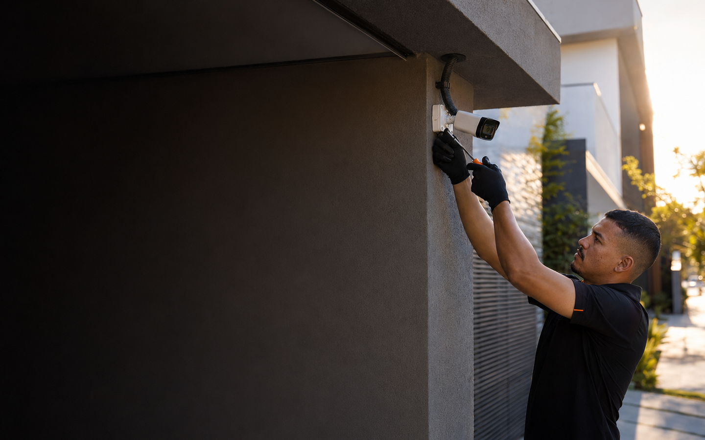
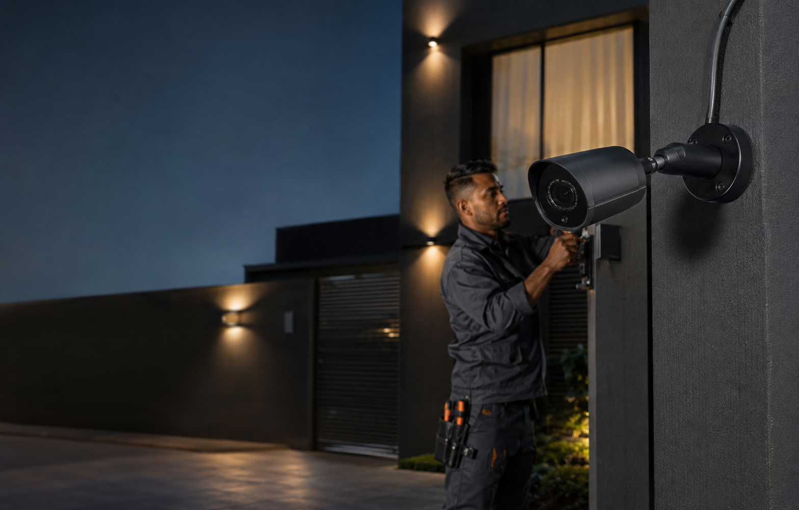

Câmeras e CFTV
Projeto, instalação e manutenção de câmeras, DVRs e monitoramento remoto para ambientes internos e externos.
Ver solução
Projetos completos de segurança eletrônica e automação para residências, condomínios e empresas em Uberlândia.
Analisamos cada ambiente para entregar uma solução segura, funcional e adequada à rotina do cliente.
Projeto, instalação e manutenção de câmeras, DVRs e monitoramento remoto para ambientes internos e externos.
Ver soluçãoSensores infravermelhos, sirenes e sistemas de detecção configurados para proteger cada ponto crítico.
Ver soluçãoVenda, instalação e manutenção de motores, centrais, controles, cremalheiras e componentes.
Ver soluçãoInstalação e manutenção preventiva para reforçar o perímetro de residências, empresas e condomínios.
Proteção perimetral resistente, bem instalada e dimensionada para oferecer segurança sem improvisos.
Interfones, fechaduras digitais e soluções que combinam praticidade, conectividade e controle.

Você conta o que precisa proteger. A GF avalia o local, especifica os equipamentos e executa a instalação com acabamento profissional.
A GF é revenda autorizada PPA. Trabalhamos com uma marca reconhecida por inovação, tecnologia e durabilidade em automação de acessos.
Conhecer automação